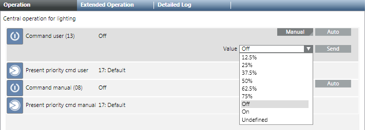
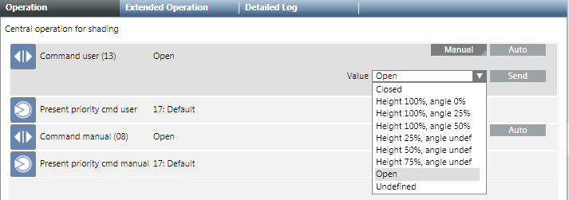
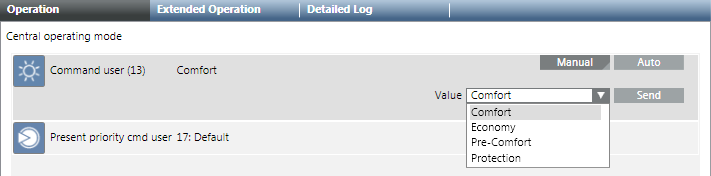

Control using a Central Function
The central function overrides local room operation. The required operating mode in the room can be commanded again after successful central override.
Prerequisites:
- The system browser is in Operating mode.
- In System Browser, Management View is selected.
- The online connection is established.
Switching on Lighting
- Select Applications > Logics > Central Functions > [Hierarchy Name] > Light [Category] > [Central Lighting (CenOpLgt)].
- The associated lighting objects are displayed in the Central Function Viewer.
- Click the Operation tab.
- Do the following:
- For priority 13, select the Command user (13) property and click Manual.
- For priority 8, select the Command manual (8) property and click Manual.
- In the Value drop-down list, select the illuminance.

- Click Send.
- The message
Command successfulappears.
Controlling Blinds
- Select Applications > Logics > Central Functions > [Hierarchy Name] > Blinds [Category] > [Central Blinds Control (CenOpShd)].
- The associated blinds objects are displayed in the Central Function Viewer.
- Click the Operation tab.
- Do the following:
- For priority 13, select the Command user (13) property and click Manual.
- For priority 8, select the Command manual (8) property and click Manual.
- In the Value drop-down list, select the blinds position.

- Click Send.
- The message
Manual successfulis displayed.
Changing Room Operating Mode
- Select Applications > Logics > Central Functions > [Network name], property User command (13) [Category] > [Central Operating Mode (CenOpMod)].
- The associated operating modes are displayed in the Central Function Viewer.
- In the Operation tab, select the User command (13) property.
a. Click Manual.
b. In the Value drop-down list, select the operating mode.
c. Click Send.
- The message
Command successfulappears.